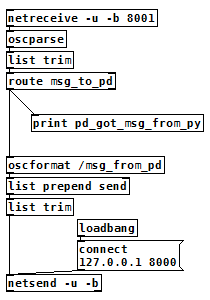

OSCによるPure DataとPythonの連携
2018年05月10日 カテゴリー：Pure Data
Pure Data（Pd）とPythonを連携させる方法として、Open Sound Control（OSC）という通信方法を試しました。これによりRaspberrry Pi（RPi）上でPdから間接的にGPIOを操作し、スイッチやLED等を扱うことができるようになります。もちろん別のコンピュータとの通信を行うといったことも可能です。
Python側の準備として、pylibloを導入します。python-oscというものもあるようですが、試していません。
$ sudo apt-get install python-liblo
参考ページ→pylibloを使ってOSCメッセージを扱う
Pd側はversion 0.46以降であればOSC用オブジェクト[oscformat][oscparse]が使えます。
▽テストプログラム
py_osc.py
#!/usr/bin/env python
# coding:utf-8
import liblo
server = liblo.Server(8000)
target = liblo.Address("127.0.0.1",8001)
def callback(path, args, types, src):
print "py got msg from pd:", args[0]
server.add_method("/msg_from_pd","f", callback)
liblo.send(target,"/msg_to_pd", 4558)
server.recv(1)
pd_osc.pd

先にバックグラウンドでPdパッチを実行した後、Pythonプログラムを実行します。
$ pd pd_osc.pd &
$ python py_osc.py
通信に成功すれば、以下のメッセージが表示されるはずです。
pd_got_msg_from_py: 4558
py got msg from pd: 4558.0
Pythonプラグラムから送信された4558という数値をPdが受け取り、Pdから同じ数値が送信されてPythonが受け取ります。pylibloのExample Codeや[oscformat][oscparse]のヘルプを簡略化したものなので、特に難しいところはないでしょう。
Pdでスイッチ類を扱う他の方法についてメモしておきます。
・pdsend、pdreceiveコマンド
pdsendは今まで使っていました。pdreceiveの方は詳細不明で通信成功に至りませんでした。
・Pduino
別途Arduinoが必要で、検証していません。
・Pd-wiringPi（Pd外部オブジェクト）
Pdの実行にsudoが必要になります。GPIOの入力待ちがやりにくそうでしたが、使えないことはないと思います。
・py/pyext（Pd外部オブジェクト）
Pdでpythonプログラムを動かします。導入が難しく、RPiではコンパイルが必要なようです。